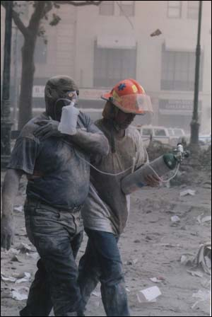

Eric Grondin, 14 Septembre 2001, 8h40
J'ai lu hier dans le site de CNN le récit suivant qui illustre ce qu'on
vécu les chanceux qui s'en sont sortis relativement indemnes :
Site : http://www.cnn.com/2001/US/09/12/survivor.profiles.focus/
A witness to the destruction
September 13, 2001 Posted: 9:50 AM EDT (1350 GMT)
(CNN) -- Louis Lesce was on the 86th floor of the World Trade Center's north
tower when the hijacked airplane slammed into the building Tuesday
morning. He spoke Wednesday with CNN anchor Natalie Allen about his dark, wet
escape down a winding stairwell.

NATALIE ALLEN: Mr. Lesce, what did you think happened and how close were you to the impact?LOUIS LESCE: I was on the 86th floor and I was reviewing some work, and it
was about 10 'til 9 and the building shook. And I felt it was an earthquake
and it didn't bother me, because I felt the building could sustain earthquakes.
They were built for that.
And then there was a huge explosion and the ceiling fell. I got out of that
conference room and there were five other people on the floor and we
decided to leave. But when we opened the door there was a black wall of smoke.
So we closed that door right away, and we sat in the conference room and debated
what to do. And then we decided to break the windows, and one of the gentlemen
found a ball-peen hammer and then we said, "Well, if we break the window
what's going to be affected? Are we going to be sucked out? Is the
smoke going to be sucked out or is air going to come in?"
We had no alternative, so we broke the window and at that point glass flew in as well as hot shrapnel. We didn't know where that came from, and the smoke began to subside because it had begun to fill the office.
And finally, about 20 minutes later, someone came up and said, "We're
going down." And we started to walk down and there was gray smoke and we
could only see the shadow of flashlights. And between the screaming and the
sirens, which was very eerie, and water coming out of the walls and the ceiling
-- much like a shower -- and about ? three inches of water cascading on the
steps. We started to make our way. And about five minutes or six minutes into
descending, the lights went out.
ALLEN: Could you feel as you descended heat coming down on you?
LESCE: No heat. ? Just water, and that's all there was. ?We'd go down maybe
five or six stairs, stories, and then it'd be absolutely dry. And we'd go
down some more and then there was a shift from stairway A to B as things got
congested.
There were people passing (me) with bruises and bleeding, and some people being
carried down. But what was marvelous is, we were on the right side and
here were firemen carrying maybe 30, 40 pounds of load going upstairs. Where
we were trying to escape, they were going to it.
ALLEN: Did you have any idea what had happened? Were people starting to talk about what it could have been?
LESCE: Nobody knew what had happened. Nothing. People were comforting one another.
Someone said to me, "You know, you look kind of tired, buddy. Let
me hold your jacket." And he did. Someone else asked to hold my briefcase.
We made it all the way down. I don't know where those people are.
And we were in the mall, on the mall level and there were about 30 people with me. And we were walking down, and they said, "OK, go left."
And as I went left into this passageway, which is sort of right by the ...
train, I heard a huge PSHHHHCRSHHHHHHH in back of me. And I turned around
and something, it was collapsing. The building was collapsing, and the next
thing was this huge rush of wind pushing me. I fell down immediately and
hugged the ground and debris went over my head and just buried me.
?Finally, a pin of light showed, and after about 10 minutes that pin got bigger
and bigger, and then a gentleman picked me up and we walked out. He
said, "There's right or left. Let's go left." We went up into light.
Kept walking along. Some other people were with me then we went down an escalator
that wasn't moving.
Then it was maybe seven people with me. As we went down, we were told to go
up, because probably we had an underground passage though an obstacle that
was at the top. As I went up, now there were only five people with me. One guy
went his own way. ?Now there was only four. We went to another area,
and then another policeman came. He went to an emergency and said, "Stay
here."
One guy left, ? and one guy said, "I'm going to go through that door."
It wasn't a door. It was really broken glass, and he went and I went about 20
feet behind him, and he disappeared. And that was the eerie thing. Of all those
people I was with, they disappeared. When I stepped out into the
plaza, there was nobody. It was like the last man on earth. Except for about
four inches of white soot, looked like snow.
?And it wasn't until I reached about that 100 yards that I began to see another
human. And I walked up to Nassau street and started to make a call to
my wife. And just then there was another PSHCRSHHHH and another part of the
building collapsed. This black roar came back again and turned the day
absolutely black.
So I ? threw myself on the ground and waited a second time for the blackness
to stop. And finally again, there as a little pin of light, somebody's
voice asking me to stand up. And I stood up in the dark and (said), "OK,
this is Nassau Street. Now there's going to be a cross(walk). You're going to
go down a curb, go up."
I saw the light get larger and larger. (Someone) came and got me and we went
into a store. And there were five or six people there. One guy gave me
his T-shirt. I looked like somebody had poured black plaster of Paris all over
me. I couldn't swallow. I spit out black. And then I was told to walk
up to Beekman Hospital. But as I started walking up, I got as far as federal
court and a police captain said, "You can't go up there."
They put me in front of a hydrant, poured water all over me, took me up to a triage center. Police there washed me.